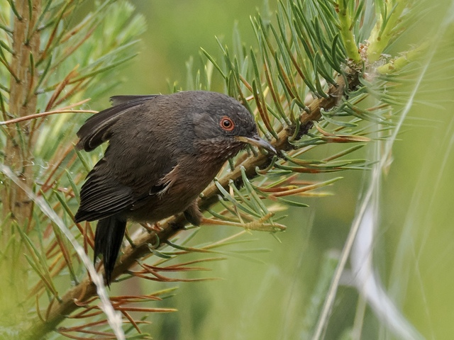
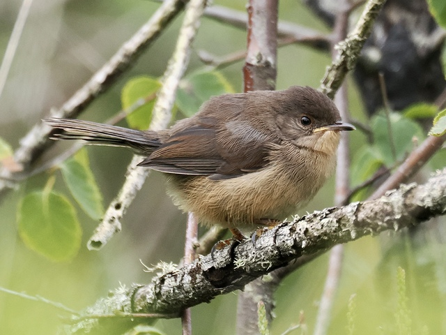

Dartford Warbler
Curruca undata
Order: Passeriformes
Family: Sylviidae

A small, grey-backed warbler with a reddish breast and belly. White stripe on belly. Red eye ring and irises. In the UK, found exclusively in lowland heath with heather and gorse, and unfortunately not present anymore in Dartford, where it was first collected. This species is listed as sensitive on eBird in the UK, so one is unable to find others' records of it, but I can assure you that it is quite locally common in the right places, such as RSPB Arne and Thursley Common.

This cute fledgling is developing its signature red eyes. Unlike other warblers, the Dartford Warbler does not migrate, and is insectivorous throughout the year, meaning that they are quite vulnerable to harsh winters, but they are able to bounce back quite quickly.